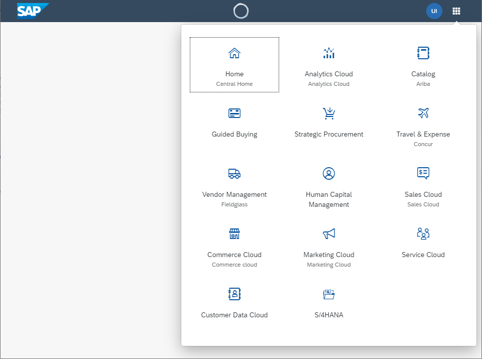

What's New in OpenUI5 1.72
With this release OpenUI5 is upgraded from version 1.71 to 1.72.
New Features
|
New Theme Available (Experimental) A new theme SAP Quartz Dark (theme ID: sap_fiori_3_dark) has been introduced. The theme is provided as an additional theme in OpenUI5. |
| Responsive Paddings Enablement We have introduced the sap.ui.core.util.ResponsivePaddingsEnablement utility for applying responsive paddings over separate parts of the controls, when using the SAP Quartz themes. The breakpoints and layout paddings can now be determined by the container's width, and not by the screen size. We have introduced responsive paddings to the sap.m.Page,sap.m.Popover, and sap.m.Wizard controls. For more information, see Enabling Responsive Paddings According to the Control Width. |
New Controls
sap.f.ProductSwitch (Experimental) The new layout control is a single-level navigation menu that offers access to the entry pages of products. Its items can be configured with an image/icon, title, subtitle, and navigation target. For more information, see the API Reference and the Samples. |
Improved Features
|
Navigation in Nested Components The navigation in nested components has been enhanced with additional information that can now be passed in optional parameters of the navTo method of sap.ui.core.routing.Router. This additional information enables the routers in nested components to show the targets which are configured to one specific route. For more information, see sap.ui.core.routing.Router.navTo in the API Reference and Navigate with Nested Components. |
|
OpenUI5 OData V4 Model The new version of the OpenUI5 OData V4 model introduces the following features:
For more information, see OData V4 Model, the API Reference, and the Samples. |
|
Title Alignment Changes for SAP Quartz Themes A new title alignment has been introduced for the SAP Quartz themes. The title of the affected control is aligned to the start position (left or right depending on the text directionality). Affected Controls:
|
Improved Controls
|
sap.f.Avatar We have added more options in the sap.f.AvatarColor enum for the background color of the sap.f.Avatar: Transparent, TileIcon, and Placeholder. To set them, use the backgroundColor property. For more information, see the Sample. |
|
sap.f.FlexibleColumnLayoutSemanticHelper Some methods in the helper class rely on the internal sap.f.FlexibleColumnLayout reference to be rendered. To facilitate their use, we have implemented two new public methods: whenDOMReady and isDOMReady. Additionally, two more abstract methods were implemented that internally wrap isDOMReady and whenDOMReady, which provide means for other similar methods to be combined, if necessary. For more information, see the API Reference. |
| sap.m.ActionSheet We have extended the afterClose event, to provide context information that indicates the trigger of closing the control - whether it closes with a selection, or it is dismissed. For more information, see the API Reference. |
| sap.m.ComboBox, sap.m.MultiComboBox,
sap.m.Input, sap.m.MultiInput We have improved the controls to display the text set in the valueStateText property on multiple lines. This ensures that the value state text is displayed even when it is longer than the width of the control's container. For more information, see the sap.m.ComboBox Sample. |
|
sap.m.DateRangeSelection We have introduced an optional footer with OK and Cancel buttons, to provide an alternative way for users to confirm the date range selection. For more information, see the API Reference. |
|
sap.m.List, sap.m.Table, sap.m.Tree
|
|
sap.m.SinglePlanningCalendar The appointmentSelect event was also provided for the appointments in the Month view, fired when an appointment is selected. For more information, see the API Reference. |
|
sap.m.Table If applications configure a responsive table that contains only one column in such a way that all columns are moved to the pop-in or hidden on smaller screens, this setting is now ignored to ensure that there is at least one column visible in the tabular layout. For more information, see the API Reference. |
|
sap.m.ViewSettingsDialog The Reset button is now fully available for all the tabs in this control.
For more information, see the API Reference. |
| sap.m.Wizard We have added a new backgroundDesign property. It can change the background color of the content and accepts values from sap.m.PageBackgroundDesign. For more information, see the Sample. |
|
sap.ui.integration.widgets.Card
For more information, see Card Explorer. |
|
sap.ui.table.AnalyticalTable, sap.ui.table.Table, sap.ui.table.TreeTable
|
|
sap.ui.unified.FileUploader The new fileEmpty event was introduced, fired when uploading an empty file. For more information, see the API Reference. |
|
sap.uxap.BlockBase You can now subscribe to the new viewInit event that is fired when the asynchronously created internal view is available. For more information, see the API Reference. |